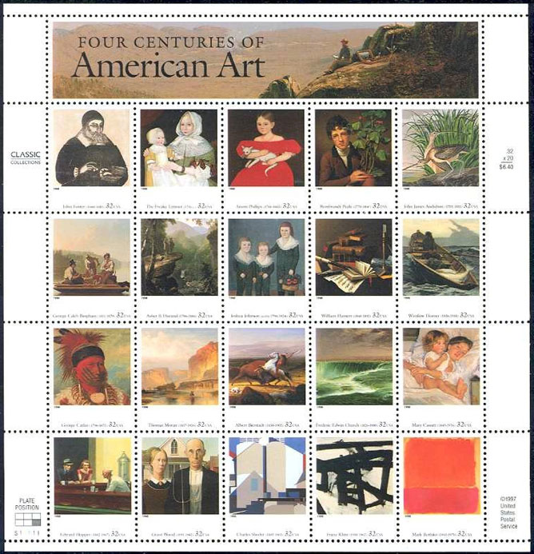

Four Centuries of American Art
The United States Postal Service has issued in 1998 a palette of
artistic issues. They include a pane of 20 commemoratives reproducing, in its
oppinion,
the best of American art from colonial times to the present century.
The twenty American paintings are featured on the pane of 32-cent
stamps. The Postal Service has named them "American Masterpieces" and also
"Four Centuries of American Art".
The chosen masterpieces cover the past 400 years, offering a wide range
of styles and themes. The following stamps were released:

|
|
The displayed pane was issued
on August 27,
1998
Background: Number 22, 1949, by Mark Rothko
Interested in some critical comments of this pane? Then please click here
Link: Abstract Expressionists, USA, 2010